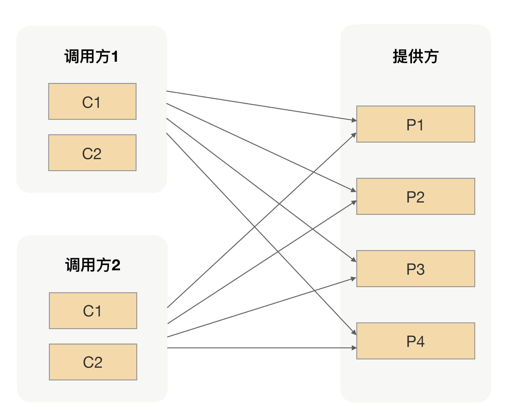
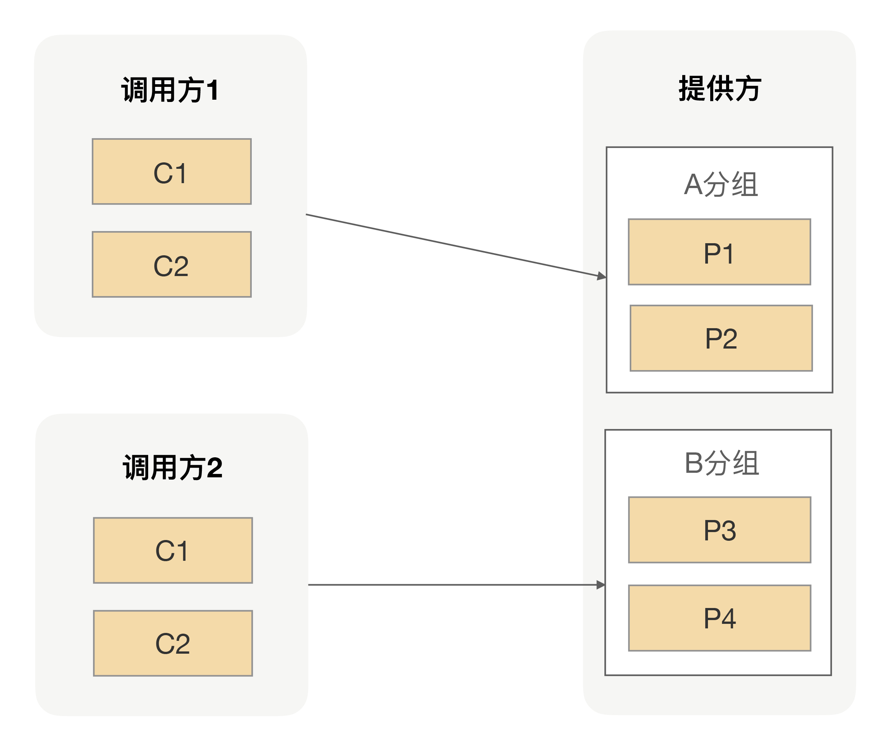

- 00 开篇词 别老想着怎么用好RPC框架，你得多花时间琢磨原理.md.html
- 01 核心原理：能否画张图解释下RPC的通信流程？.md.html
- 02 协议：怎么设计可扩展且向后兼容的协议？.md.html
- 03 序列化：对象怎么在网络中传输？.md.html
- 04 网络通信：RPC框架在网络通信上更倾向于哪种网络IO模型？.md.html
- 05 动态代理：面向接口编程，屏蔽RPC处理流程.md.html
- 06 RPC实战：剖析gRPC源码，动手实现一个完整的RPC.md.html
- 07 架构设计：设计一个灵活的RPC框架.md.html
- 08 服务发现：到底是要CP还是AP？.md.html
- 09 健康检测：这个节点都挂了，为啥还要疯狂发请求？.md.html
- 10 路由策略：怎么让请求按照设定的规则发到不同的节点上？.md.html
- 11 负载均衡：节点负载差距这么大，为什么收到的流量还一样？.md.html
- 12 异常重试：在约定时间内安全可靠地重试.md.html
- 13 优雅关闭：如何避免服务停机带来的业务损失？.md.html
- 14 优雅启动：如何避免流量打到没有启动完成的节点？.md.html
- 15 熔断限流：业务如何实现自我保护_.md.html
- 16 业务分组：如何隔离流量？.md.html
- 17 异步RPC：压榨单机吞吐量.md.html
- 18 安全体系：如何建立可靠的安全体系？.md.html
- 19 分布式环境下如何快速定位问题？.md.html
- 20 详解时钟轮在RPC中的应用.md.html
- 21 流量回放：保障业务技术升级的神器.md.html
- 22 动态分组：超高效实现秒级扩缩容.md.html
- 23 如何在没有接口的情况下进行RPC调用？.md.html
- 24 如何在线上环境里兼容多种RPC协议？.md.html
- 加餐 RPC框架代码实例详解.md.html
- 加餐 谈谈我所经历过的RPC.md.html
- 答疑课堂 基础篇与进阶篇思考题答案合集.md.html
- 结束语 学会从优秀项目的源代码中挖掘知识.md.html
- 捐赠
16 业务分组：如何隔离流量？
你好，我是何小锋。上一讲我们介绍了RPC中常用的保护手段“熔断限流”，熔断是调用方为了避免在调用过程中，服务提供方出现问题的时候，自身资源被耗尽的一种保护行为；而限流则是服务提供方为防止自己被突发流量打垮的一种保护行为。虽然这两种手段作用的对象不同，但出发点都是为了实现自我保护，所以一旦发生这种行为，业务都是有损的。
那说起突发流量，限流固然是一种手段，但其实面对复杂的业务以及高并发场景时，我们还有别的手段，可以最大限度地保障业务无损，那就是隔离流量。这也是我今天重点要和你分享的内容，接下来我们就一起看看分组在RPC中的应用。
为什么需要分组？
在我们的日常开发中，我们不都提倡让用户使用起来越简单越好吗？如果在接口上再加一个分组维度去管理，不就让事情变复杂了吗？
实则不然，举个例子。在没有汽车的年代，我们的道路很简单，就一条，行人、洋车都在上边走。那随着汽车的普及以及猛增，我们的道路越来越宽，慢慢地有了高速、辅路、人行道等等。很显然，交通网的建设与完善不仅提高了我们的出行效率，而且还更好地保障了我们行人的安全。
同样的道理，我们用在RPC治理上也是一样的。假设你是一个服务提供方应用的负责人，在早期业务量不大的情况下，应用之间的调用关系并不会复杂，请求量也不会很大，我们的应用有足够的能力扛住日常的所有流量。我们并不需要花太多的时间去治理调用请求过来的流量，我们通常会选择最简单的方法，就是把服务实例统一管理，把所有的请求都用一个共享的“大池子”来处理。这就类似于“简单道路时期”，服务调用方跟服务提供方之间的调用拓扑如下图所示：

后期因为业务发展丰富了，调用你接口的调用方就会越来越多，流量也会渐渐多起来。可能某一天，一个“爆炸式惊喜”就来了。其中一个调用方的流量突然激增，让你整个集群瞬间处于高负载运行，进而影响到其它调用方，导致它们的整体可用率下降。而这时候作为应用负责人的你，那就得变身“救火队长”了，要想尽各种办法来保证应用的稳定。
在经过一系列的救火操作后，我们肯定要去想更好的应对办法。那回到问题的根本去看，关键就在于，早期为了管理方便，我们把接口都放到了同一个分组下面，所有的服务实例是以一个整体对外提供能力的。
但后期因为业务发展，这种粗暴的管理模式已经不适用了，这就好比“汽车来了，我们的交通网也得抓紧建设”一样，让人车分流。此时，道路上的人和车就好比我们应用的调用方，我们可以尝试把应用提供方这个大池子划分出不同规格的小池子，再分配给不同的调用方，而不同小池子之间的隔离带，就是我们在RPC里面所说的分组，它可以实现流量隔离。
怎么实现分组？
现在分组是怎么回事我们搞清楚了，那放到RPC里我们该怎么实现呢？
既然是要求不同的调用方应用能拿到的池子内容不同，那我们就要回想下服务发现了，因为在RPC流程里，能影响到调用方获取服务节点的逻辑就是它了。
在[第 08 讲] 我们说过，服务调用方是通过接口名去注册中心找到所有的服务节点来完成服务发现的，那换到这里的话，这样做其实并不合适，因为这样调用方会拿到所有的服务节点。因此为了实现分组隔离逻辑，我们需要重新改造下服务发现的逻辑，调用方去获取服务节点的时候除了要带着接口名，还需要另外加一个分组参数，相应的服务提供方在注册的时候也要带上分组参数。
通过改造后的分组逻辑，我们可以把服务提供方所有的实例分成若干组，每一个分组可以提供给单个或者多个不同的调用方来调用。那怎么分组好呢，有没有统一的标准？
坦白讲，这个分组并没有一个可衡量的标准，但我自己总结了一个规则可以供你参考，就是按照应用重要级别划分。
非核心应用不要跟核心应用分在同一个组，核心应用之间应该做好隔离，一个重要的原则就是保障核心应用不受影响。比如提供给电商下单过程中用的商品信息接口，我们肯定是需要独立出一个单独分组，避免受其它调用方污染的。有了分组之后，我们的服务调用方跟服务提供方之间的调用拓扑就如下图所示：

通过分组的方式隔离调用方的流量，从而避免因为一个调用方出现流量激增而影响其它调用方的可用率。对服务提供方来说，这种方式是我们日常治理服务过程中一个高频使用的手段，那通过这种分组进行流量隔离，对调用方应用会不会有影响呢？
如何实现高可用？
分组隔离后，单个调用方在发RPC请求的时候可选择的服务节点数相比没有分组前减少了，那对于单个调用方来说，出错的概率就升高了。比如一个集中交换机设备突然坏了，而这个调用方的所有服务节点都在这个交换机下面，在这种情况下对于服务调用方来说，它的请求无论如何也到达不了服务提供方，从而导致这个调用方业务受损。
那有没有更高可用一点的方案呢？回到我们前面说的那个马路例子上，正常情况下我们是必须让车在车道行驶，人在人行道上行走。但当人行道或者车道出现抢修的时候，在条件允许的情况下，我们一般都是允许对方借道行驶一段时间，直到道路完全恢复。
我们同样可以把这个特性用到我们的RPC中，要怎么实现呢？
在前面我们也说了，调用方应用服务发现的时候，除了带上对应的接口名，还需要带上一个特定分组名，所以对于调用方来说，它是拿不到其它分组的服务节点的，那这样的话调用方就没法建立起连接发请求了。
因此问题的核心就变成了调用方要拿到其它分组的服务节点，但是又不能拿到所有的服务节点，否则分组就没有意义了。一个最简单的办法就是，允许调用方可以配置多个分组。但这样的话，这些节点对于调用方来说就都是一样的了，调用方可以随意选择获取到的所有节点发送请求，这样就又失去了分组隔离的意义，并且还没有实现我们想要的“借道”的效果。
所以我们还需要把配置的分组区分下主次分组，只有在主分组上的节点都不可用的情况下才去选择次分组节点；只要主分组里面的节点恢复正常，我们就必须把流量都切换到主节点上，整个切换过程对于应用层完全透明，从而在一定程度上保障调用方应用的高可用。
总结
今天我们通过一个道路划分的案例，引出了在RPC里面我们可以通过分组的方式人为地给不同的调用方划分出不同的小集群，从而实现调用方流量隔离的效果，保障我们的核心业务不受非核心业务的干扰。但我们在考虑问题的时候，不能顾此失彼，不能因为新加一个的功能而影响到原有系统的稳定性。
其实我们不仅可以通过分组把服务提供方划分成不同规模的小集群，我们还可以利用分组完成一个接口多种实现的功能。正常情况下，为了方便我们自己管理服务，我一般都会建议每个接口完成的功能尽量保证唯一。但在有些特殊场景下，两个接口也会完全一样，只是具体实现上有那么一点不同，那么我们就可以在服务提供方应用里面同时暴露两个相同接口，但只是接口分组不一样罢了。
课后思考
在我们的实际工作中，测试人员和开发人员的工作一般都是并行的，这就导致一个问题经常出现：开发人员在开发过程中可能需要启动自身的应用，而测试人员为了能验证功能，会在测试环境中部署同样的应用。如果开发人员和测试人员用的接口分组名刚好一样，在这种情况下，就可能会干扰其它正在联调的调用方进行功能验证，进而影响整体的工作效率。不知道面对这种情况，你有什么好办法吗？
欢迎留言和我分享你的思考，也欢迎你把文章分享给你的朋友，邀请他加入学习。我们下节课再见！
© 2019 - 2023 Liangliang Lee. Powered by gin and hexo-theme-book.